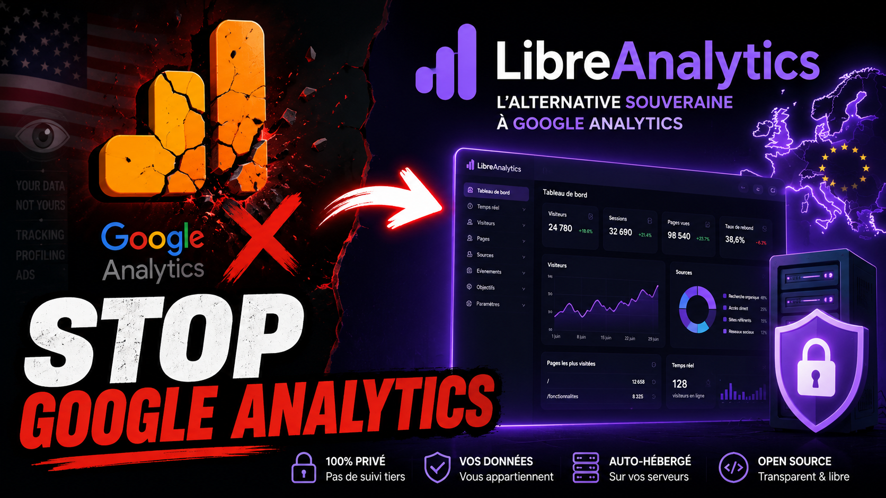
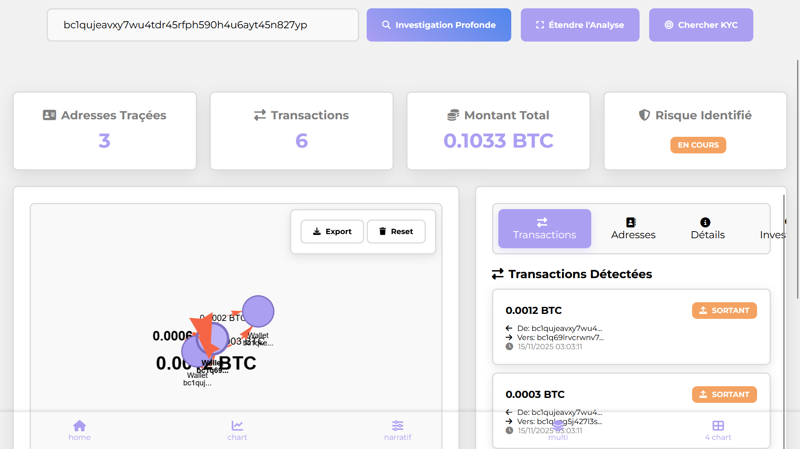
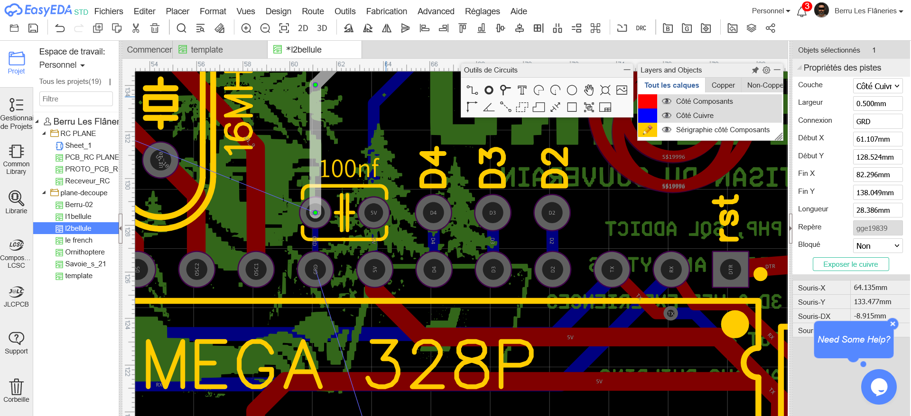

Mes projets open-source & réalisations DIY
Créations électroniques, outils web souverains et innovations tech. Tous mes projets sont open-source avec schémas, code et documentation complètes. Ma spécialité depuis 2020 est de coder ou vibecoder sans framework et sans dépendances inutiles, mes logiciels sont en PHP natif et mes bases de données en SQL hebergé sur mes propres serveurs ou ailleurs en France. Pas de gafam dans mes architectures, vos données sont ni vendu, ni exploitées. j'aime créer.

LibreAnalytics
Alternative libre et souveraine à Google Analytics. Développée en PHP natif sans framework. Visiter le projet →

Suivi Blockchain
Outil d'analyse de transactions blockchain pour traquer les wallets d'arnaqueurs. Voir sur GitHub →

Ornithopter
Ornithoptère mécanique en cours de conception. Projet DIY combinant mécanique et aérodynamique.

RC Plane
Conception d'un système radio commandé DIY de A à Z, pour avion, bateau ou voiture. Plan électronique, Gerber et code ➡️ Voir sur GitHub →

Dragonfly
Conception d'une libellule décorative + Arduino. Plan électronique, Gerber et code ➡️ Voir sur GitHub →
NFC Badge
Badge NFC reprogrammable open-source. Basé sur la puce NT3H2111. Plan électronique, Gerber et BOM ➡️ Voir sur GitHub →